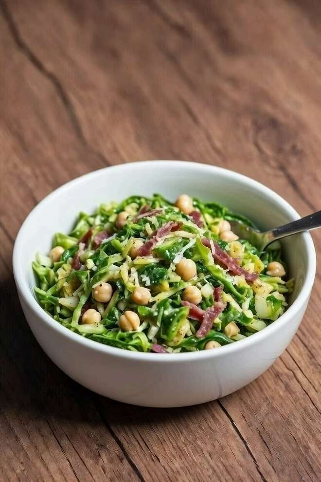

La Scala Chopped Salad

One of my favorite salads from my childhood growing up in Beverly Hills, from the world renowned La Scala Boutique.
Ingredients
Dressing
- ⅓ cup extra virgin olive oil
- 3 tablespoons red wine vinegar
- 2 cloves garlic minced
- 3 teaspoons Dijon mustard
- ½ teaspoon salt and pepper
- ⅓ cup grated Parmigiano-Reggiano cheese
Salad
- 1 head shredded iceberg lettuce (5-6 cups)
- 1 head shredded romaine lettuce (4-5 cups)
- 1 (15-ounce) can chickpeas drained and rinsed
- ¼ lb ((4 ounces) Italian salami thinly sliced
- 2 cups shredded mozzarella cheese
Instructions
No instructions were included on the original page.
Notes
- The original page lists only the ingredients — there are no directions in the PDF.